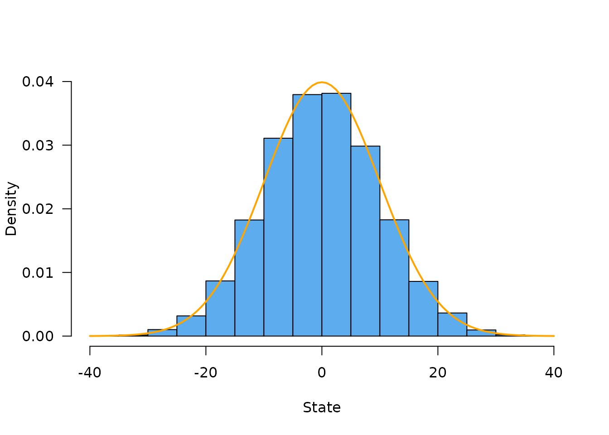
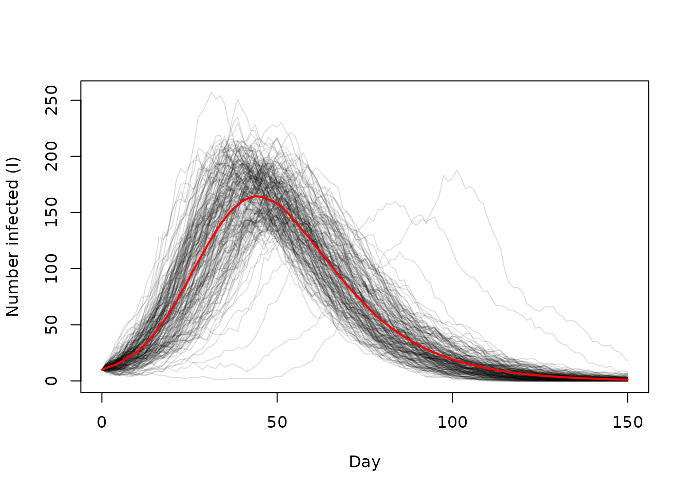

Stochastic models can be used in statistical inference via methods such as particle filtering but in practice doing so requires that the models can be run over and over again very quickly. While R has excellent support for sampling from distributions, it is not necessarily well suited for this sort of problem because R is single threaded, so we are forced to evaluate realisations of the stochastic process in series (one after another) rather than in parallel.
The dust package provides tools to help write stochastic
models that can be evaluated in parallel. It does not directly provide
statistical methods; see the mcstate package for that.
Instead, it focuses on providing:
vignette("rng") for details)Consider a unbiased random walk; at each time step we move our
position with a draw from a normal distribution with mean 0 and some
standard deviation. We consider a single individual moving but will
eventually simulate a family of these individuals, each independent. All
simulations have a sense of time - a unitless measure of time “step”
will be used but it’s up to you how it is interpreted (time is a
non-negative integer, implemented using size_t).
To implement this model in dust we write out a C++ file that looks like:
class walk {
public:
using real_type = double;
using data_type = dust::no_data;
using internal_type = dust::no_internal;
using rng_state_type = dust::random::generator<real_type>;
struct shared_type {
real_type sd;
bool random_initial;
};
walk(const dust::pars_type<walk>& pars) : shared(pars.shared) {
}
size_t size() const {
return 1;
}
std::vector<real_type> initial(size_t time, rng_state_type& rng_state) {
std::vector<real_type> ret = {0};
if (shared->random_initial) {
ret[0] = dust::random::normal<real_type>(rng_state, 0, shared->sd);
}
return ret;
}
void update(size_t time, const real_type * state, rng_state_type& rng_state,
real_type * state_next) {
state_next[0] = state[0] +
dust::random::normal<real_type>(rng_state, 0, shared->sd);
}
private:
dust::shared_ptr<walk> shared;
};
namespace dust {
template <>
dust::pars_type<walk> dust_pars<walk>(cpp11::list pars) {
walk::real_type sd = cpp11::as_cpp<walk::real_type>(pars["sd"]);
const bool random_initial = pars["random_initial"] == R_NilValue ? false :
cpp11::as_cpp<bool>(pars["random_initial"]);
return dust::pars_type<walk>(walk::shared_type{sd, random_initial});
}
}There are two main parts here; the class (walk) and an
interface function (dust::dust_pars).
The class is what does most of the work. It is important that this does not use anything in the R API as it may be called in parallel. Therefore use only C++ standard library types. It has to provide every public type or method as the example above. First, the five types:
real_type has to exist and indicate what sort
of numeric type you use for “real numbers”. Typically this will be
double, but if you need a different type (typically
float) you can use it here.data_type describes data that the model may be
compared with as it runs. Here we use dust::no_data as the
model has no such data but see vignette("data") for the
interface here.shared_type is whatever read-only data your
model needs that is shared across particles. Typically these reflect
parameters of the model (see dust::dust_pars
below), and while these will typically be shared across all particles
that is is not always the case (see vignette("multi"))internal_type is whatever internal data or
space your model needs to run. This is read-write and per-particle (in
contrast with shared_type above)rng_state_type is one of the valid RNG types.
Typically
using rng_state_type = dust::random::generator<real_type>;
will select a reasonable choice, but you could also force a specific
generator such as dust::random::xoshiro256starstar here
(see vignette("rng"))The constructor must take only one argument, being
const dust::pars_type<model>&. You can do what
you want in the constructor - here we just copy shared
(containing parameters) into the object with the pars
argument (we use the private member shared here but this
can be anything you want, though the type is important). The
dust::pars_type<> template is a wrapper that contains
two fields shared (as
dust::shared_ptr<walk>) and internal (as
internal_type).
The method size() must return the
“size” of the system - how many state variables it has. Here we’re
considering a single individual moving randomly so the size is always 1.
Many models will have a size that depends on their parameters, though
the size cannot be changed after construction.
There are other forms of the dust::pars_type constructor
which would allow specifying the internal data; typically this is used
to create scratch space (allocating vectors as needed) rather than
compute values because the scratch space and model state can become
separated from each other (by direct setting of state, or by shuffling
model state between particles).
The function dust::dust will “compile” a model for us to
use:
path_walk <- system.file("examples/walk.cpp", package = "dust")
walk <- dust::dust(path_walk)However, this is also bundled into the package and can be loaded with:
walk <- dust::dust_example("walk")The object itself is an “R6ClassGenerator” object:
walk
#> <dust> object generator
#> Public:
#> initialize: function (pars, time, n_particles, n_threads = 1L, seed = NULL,
#> name: function ()
#> param: function ()
#> run: function (time_end)
#> simulate: function (time_end)
#> run_adjoint: function ()
#> set_index: function (index)
#> index: function ()
#> ode_control: function ()
#> ode_statistics: function ()
#> n_threads: function ()
#> n_state: function ()
#> n_particles: function ()
#> n_particles_each: function ()
#> shape: function ()
#> update_state: function (pars = NULL, state = NULL, time = NULL, set_initial_state = NULL,
#> state: function (index = NULL)
#> time: function ()
#> set_stochastic_schedule: function (time)
#> reorder: function (index)
#> resample: function (weights)
#> info: function ()
#> pars: function ()
#> rng_state: function (first_only = FALSE, last_only = FALSE)
#> set_rng_state: function (rng_state)
#> has_openmp: function ()
#> has_gpu_support: function (fake_gpu = FALSE)
#> has_compare: function ()
#> real_size: function ()
#> time_type: function ()
#> rng_algorithm: function ()
#> uses_gpu: function (fake_gpu = FALSE)
#> n_pars: function ()
#> set_n_threads: function (n_threads)
#> set_data: function (data, shared = FALSE)
#> compare_data: function ()
#> filter: function (time_end = NULL, save_trajectories = FALSE, time_snapshot = NULL,
#> gpu_info: function ()
#> Private:
#> pars_: NULL
#> pars_multi_: NULL
#> index_: NULL
#> info_: NULL
#> n_threads_: NULL
#> n_particles_: NULL
#> n_particles_each_: NULL
#> shape_: NULL
#> ptr_: NULL
#> gpu_config_: NULL
#> ode_control_: NULL
#> methods_: NULL
#> param_: NULL
#> reload_: NULL
#> Parent env: <environment: namespace:dust>
#> Locked objects: TRUE
#> Locked class: FALSE
#> Portable: TRUECreate an instance of the model using walk$new. There
are three required arguments:
pars: passed to dust_pars to initialise
the modeltime: the initial time (0 seems like a sensible choice
here given our model has no internal sense of time)n_particles: the number of particles to create
model <- walk$new(list(sd = 1), 0, 20)
model
#> <dust>
#> Public:
#> compare_data: function ()
#> filter: function (time_end = NULL, save_trajectories = FALSE, time_snapshot = NULL,
#> gpu_info: function ()
#> has_compare: function ()
#> has_gpu_support: function (fake_gpu = FALSE)
#> has_openmp: function ()
#> index: function ()
#> info: function ()
#> initialize: function (pars, time, n_particles, n_threads = 1L, seed = NULL,
#> n_pars: function ()
#> n_particles: function ()
#> n_particles_each: function ()
#> n_state: function ()
#> n_threads: function ()
#> name: function ()
#> ode_control: function ()
#> ode_statistics: function ()
#> param: function ()
#> pars: function ()
#> real_size: function ()
#> reorder: function (index)
#> resample: function (weights)
#> rng_algorithm: function ()
#> rng_state: function (first_only = FALSE, last_only = FALSE)
#> run: function (time_end)
#> run_adjoint: function ()
#> set_data: function (data, shared = FALSE)
#> set_index: function (index)
#> set_n_threads: function (n_threads)
#> set_rng_state: function (rng_state)
#> set_stochastic_schedule: function (time)
#> shape: function ()
#> simulate: function (time_end)
#> state: function (index = NULL)
#> time: function ()
#> time_type: function ()
#> update_state: function (pars = NULL, state = NULL, time = NULL, set_initial_state = NULL,
#> uses_gpu: function (fake_gpu = FALSE)
#> Private:
#> gpu_config_: NULL
#> index_: NULL
#> info_: NULL
#> methods_: list
#> n_particles_: 20
#> n_particles_each_: 20
#> n_threads_: 1
#> ode_control_: NULL
#> param_: NULL
#> pars_: list
#> pars_multi_: FALSE
#> ptr_: externalptr
#> reload_: NULL
#> shape_: 20This returns an R6 object that can be used to simulate from or interact with the model. For example, our initial model state is
model$state()
#> [,1] [,2] [,3] [,4] [,5] [,6] [,7] [,8] [,9] [,10] [,11] [,12] [,13] [,14]
#> [1,] 0 0 0 0 0 0 0 0 0 0 0 0 0 0
#> [,15] [,16] [,17] [,18] [,19] [,20]
#> [1,] 0 0 0 0 0 0Here there is one row per model state variable (there is only one here) and one column per particle (there are 20)
and we can run the model for 100 time steps, which returns the state at the end of the walk (and not at any intermediate times):
model$run(100)
#> [,1] [,2] [,3] [,4] [,5] [,6] [,7] [,8]
#> [1,] 1.562305 7.288367 5.84155 0.08509074 -7.07042 10.60426 -2.057119 -9.614804
#> [,9] [,10] [,11] [,12] [,13] [,14] [,15] [,16]
#> [1,] -8.294164 9.07455 19.80548 1.293768 -13.24191 -1.231157 8.591563 5.342956
#> [,17] [,18] [,19] [,20]
#> [1,] -9.857717 -8.946853 18.32985 7.39139We can also directly retrieve the state from our object
model$state()
#> [,1] [,2] [,3] [,4] [,5] [,6] [,7] [,8]
#> [1,] 1.562305 7.288367 5.84155 0.08509074 -7.07042 10.60426 -2.057119 -9.614804
#> [,9] [,10] [,11] [,12] [,13] [,14] [,15] [,16]
#> [1,] -8.294164 9.07455 19.80548 1.293768 -13.24191 -1.231157 8.591563 5.342956
#> [,17] [,18] [,19] [,20]
#> [1,] -9.857717 -8.946853 18.32985 7.39139At this point our particles have been run for 100 time steps with standard deviation 1 at each step so they will be distributed following Normal(0, 10). This is easier to see if we simulate a lot of particles, here 20,000:
model <- walk$new(list(sd = 1), 0, 20000)
invisible(model$run(100))
hist(model$state(), freq = FALSE, las = 1, col = "steelblue2", main = "",
ylim = c(0., 0.04), xlab = "State")
curve(dnorm(x, 0, 10), col = "orange", add = TRUE, lwd = 2)
The approach above still runs everything in serial, one particle
after another. We can configure this system to run in parallel by
providing the extra argument n_threads to the
constructor.
Provided that your system can compile with openmp the following code will execute in parallel using 2 threads
model <- walk$new(list(sd = 1), 0, 20, n_threads = 2)
model$run(100)
#> [,1] [,2] [,3] [,4] [,5] [,6] [,7]
#> [1,] -2.746012 9.349137 2.845653 -0.4137361 10.94929 1.134218 -1.739739
#> [,8] [,9] [,10] [,11] [,12] [,13] [,14]
#> [1,] 20.00793 -1.270901 -33.45582 -0.242807 19.33025 -2.876218 -10.63793
#> [,15] [,16] [,17] [,18] [,19] [,20]
#> [1,] 1.340985 -1.82075 -9.159877 1.239593 2.730351 -10.55075Running this same code in series will give the same results:
model <- walk$new(list(sd = 1), 0, 20, n_threads = 1)
model$run(100)
#> [,1] [,2] [,3] [,4] [,5] [,6] [,7] [,8]
#> [1,] -16.47891 6.388069 -2.852034 -6.039058 7.573581 1.939201 -15.871 -5.08495
#> [,9] [,10] [,11] [,12] [,13] [,14] [,15] [,16]
#> [1,] -12.97332 -17.91718 -5.339374 15.57415 14.11479 -0.8274314 5.83841 10.0005
#> [,17] [,18] [,19] [,20]
#> [1,] 1.172349 19.51808 3.247002 6.840864We use as many random number generators as there are particles, so if
you run fewer particles or more, increase the threads or decrease, the
results will be the same (see vignette("design") for more
on this).
You should be careful when selecting the number of threads.
dust will never use more than one thread at a time without
it being requested, but avoid using parallel::detectCores()
to work out how many threads you have available as it will often return
an overestimate. This is particularly the case in a shared-use system
such as a cluster or CRAN’s servers. We provide a helper function
dust::dust_openmp_threads which can be used to try and find
a safe number of threads available to you while respecting various
environment variables which seek to control this (MC_CORES,
OMP_THREAD_LIMIT, etc).
For example,
dust::dust_openmp_threads(100, "fix")
#> Requested number of threads '100' exceeds a limit of '1'
#> See dust::dust_openmp_threads() for details
#> [1] 1Consider now an SIR model (Susceptible - Infected - Recovered). This sort of model is common in epidemiology, and is often extended to add additional compartments (e.g., SEIR which adds an Exposed compartment) or by structuring each compartment based on properties such as age. Here, we show a simple example with just 3 compartments:
class sir {
public:
using real_type = double;
using internal_type = dust::no_internal;
using rng_state_type = dust::random::generator<real_type>;
struct data_type {
real_type incidence;
};
struct shared_type {
real_type S0;
real_type I0;
real_type R0;
real_type beta;
real_type gamma;
real_type dt;
size_t freq;
// Observation parameters
real_type exp_noise;
};
sir(const dust::pars_type<sir>& pars) : shared(pars.shared) {
}
size_t size() const {
return 5;
}
std::vector<real_type> initial(size_t time, rng_state_type& rng_state) {
std::vector<real_type> ret = {shared->S0, shared->I0, shared->R0, 0, 0};
return ret;
}
void update(size_t time, const real_type * state, rng_state_type& rng_state,
real_type * state_next) {
real_type S = state[0];
real_type I = state[1];
real_type R = state[2];
real_type cumulative_incidence = state[3];
real_type N = S + I + R;
real_type p_SI = 1 - std::exp(-(shared->beta) * I / N);
real_type p_IR = 1 - std::exp(-(shared->gamma));
real_type n_IR = dust::random::binomial<real_type>(rng_state, I,
p_IR * shared->dt);
real_type n_SI = dust::random::binomial<real_type>(rng_state, S,
p_SI * shared->dt);
state_next[0] = S - n_SI;
state_next[1] = I + n_SI - n_IR;
state_next[2] = R + n_IR;
state_next[3] = cumulative_incidence + n_SI;
// Little trick here to compute daily incidence by accumulating
// incidence from the first day.
state_next[4] = (time % shared->freq == 0) ? n_SI : state[4] + n_SI;
}
real_type compare_data(const real_type * state, const data_type& data,
rng_state_type& rng_state) {
const real_type incidence_observed = data.incidence;
if (std::isnan(data.incidence)) {
return 0;
}
const real_type incidence_modelled = state[4];
const real_type lambda = incidence_modelled +
dust::random::exponential(rng_state, shared->exp_noise);
return dust::density::poisson(incidence_observed, lambda, true);
}
private:
dust::shared_ptr<sir> shared;
};
// Helper function for accepting values with defaults
inline double with_default(double default_value, cpp11::sexp value) {
return value == R_NilValue ? default_value : cpp11::as_cpp<double>(value);
}
namespace dust {
template <>
dust::pars_type<sir> dust_pars<sir>(cpp11::list pars) {
using real_type = sir::real_type;
// Initial state values
// [[dust::param(I0, required = FALSE)]]
real_type I0 = with_default(10, pars["I0"]);
real_type S0 = 1000.0;
real_type R0 = 0.0;
// Rates, which can be set based on the provided pars
// [[dust::param(beta, required = FALSE)]]
real_type beta = with_default(0.2, pars["beta"]);
// [[dust::param(gamma, required = FALSE)]]
real_type gamma = with_default(0.1, pars["gamma"]);
// Time scaling
size_t freq = 4;
real_type dt = 1.0 / static_cast<real_type>(freq);
// Compare function
// [[dust::param(exp_noise, required = FALSE)]]
real_type exp_noise = with_default(1e6, pars["exp_noise"]);
sir::shared_type shared{S0, I0, R0, beta, gamma, dt, freq, exp_noise};
return dust::pars_type<sir>(shared);
}
template <>
cpp11::sexp dust_info<sir>(const dust::pars_type<sir>& pars) {
using namespace cpp11::literals;
// Information about state order
cpp11::writable::strings vars({"S", "I", "R", "cases_cumul", "cases_inc"});
// Information about parameter values
cpp11::list p = cpp11::writable::list({"beta"_nm = pars.shared->beta,
"gamma"_nm = pars.shared->gamma});
return cpp11::writable::list({"vars"_nm = vars, "pars"_nm = p});
}
// The way that this is going to work is we will process a list
// *outside* of the C that will take (say) a df and convert it
// row-wise into a list with elements `time` and `data`, we will pass
// that in here. Then this function will be called once per data
// element to create the struct that will be used for future work.
template <>
sir::data_type dust_data<sir>(cpp11::list data) {
return sir::data_type{cpp11::as_cpp<sir::real_type>(data["incidence"])};
}
}There a few changes here compared to the version that was shown before for the walk model, but the core parts are only slightly different:
initial method is slightly more complicated as we
initialise a 3-element vectorshared_type object has significantly more
elementsdust_pars function is much more complicatedcompare_data method and a nontrivial
data_type definition, but ignore these for now (see
vignette("data"))The other difference is a new template specialisation of
dust_info - this is optional but can be used to report back
to R information about the model based on the input parameters. Here it
returns information about variable order and core parameters.
We also have added C++ pseudo-attributes with
[[dust::param]] to describe the parameters that this
function takes. This is optional, but allows use of a coef
method with the class (see below).
As before, we’ll use the version bundled with the package
sir <- dust::dust_example("sir")To get information about the parameters, use coef() on
the generator
coef(sir)
#> $I0
#> $I0$required
#> [1] FALSE
#>
#>
#> $beta
#> $beta$required
#> [1] FALSE
#>
#>
#> $gamma
#> $gamma$required
#> [1] FALSE
#>
#>
#> $exp_noise
#> $exp_noise$required
#> [1] FALSEThe model is initialised the same way as before:
model <- sir$new(list(), 0, 20)We can use the $info() method to retrieve information
about our model:
model$info()
#> $vars
#> [1] "S" "I" "R" "cases_cumul" "cases_inc"
#>
#> $pars
#> $pars$beta
#> [1] 0.2
#>
#> $pars$gamma
#> [1] 0.1and get its state as before:
model$state()
#> [,1] [,2] [,3] [,4] [,5] [,6] [,7] [,8] [,9] [,10] [,11] [,12] [,13] [,14]
#> [1,] 1000 1000 1000 1000 1000 1000 1000 1000 1000 1000 1000 1000 1000 1000
#> [2,] 10 10 10 10 10 10 10 10 10 10 10 10 10 10
#> [3,] 0 0 0 0 0 0 0 0 0 0 0 0 0 0
#> [4,] 0 0 0 0 0 0 0 0 0 0 0 0 0 0
#> [5,] 0 0 0 0 0 0 0 0 0 0 0 0 0 0
#> [,15] [,16] [,17] [,18] [,19] [,20]
#> [1,] 1000 1000 1000 1000 1000 1000
#> [2,] 10 10 10 10 10 10
#> [3,] 0 0 0 0 0 0
#> [4,] 0 0 0 0 0 0
#> [5,] 0 0 0 0 0 0Because we have 5 states per particle, this is a 5 x 20 matrix.
Suppose that as we run the model we mostly want information on the
“I” compartment. So we’ll run the model for a bit and retrieve the
number of infected individuals, then continue, etc. To do this we use
the $set_index() method to indicate which state elements
should be returned after using $run():
model$set_index(2L)(you can pass any integer vector here, of any length, provided all the indices lie between 1 and the length of your state vector)
Now, when using run, the number of infected individuals
is returned
model$run(10)
#> [,1] [,2] [,3] [,4] [,5] [,6] [,7] [,8] [,9] [,10] [,11] [,12] [,13] [,14]
#> [1,] 13 12 12 7 10 16 7 10 16 9 10 14 14 11
#> [,15] [,16] [,17] [,18] [,19] [,20]
#> [1,] 14 17 13 15 13 11
model$run(20)
#> [,1] [,2] [,3] [,4] [,5] [,6] [,7] [,8] [,9] [,10] [,11] [,12] [,13] [,14]
#> [1,] 24 17 15 10 14 20 9 13 16 9 15 18 15 10
#> [,15] [,16] [,17] [,18] [,19] [,20]
#> [1,] 17 26 18 26 20 16This is useful when you have many compartments or variables that you are not that interested in during running the model. For a particle filter you might be fitting to the sum of all infected individuals over a number of compartments, so rather than returning hundreds of values back (times hundreds of particles) you can return back much less data and keep things nice and fast.
If the index vector is named, then those names will be used as row names on the returned object:
model$set_index(c(I = 2L))
model$run(30)
#> [,1] [,2] [,3] [,4] [,5] [,6] [,7] [,8] [,9] [,10] [,11] [,12] [,13] [,14]
#> I 27 29 16 12 18 24 11 16 26 7 18 24 20 9
#> [,15] [,16] [,17] [,18] [,19] [,20]
#> I 29 34 26 35 21 19We can always use $state() to get the whole state
vector:
model$state()
#> [,1] [,2] [,3] [,4] [,5] [,6] [,7] [,8] [,9] [,10] [,11] [,12] [,13] [,14]
#> [1,] 968 972 987 984 981 970 990 984 971 994 985 976 980 990
#> [2,] 27 29 16 12 18 24 11 16 26 7 18 24 20 9
#> [3,] 15 9 7 14 11 16 9 10 13 9 7 10 10 11
#> [4,] 32 28 13 16 19 30 10 16 29 6 15 24 20 10
#> [5,] 6 1 2 0 1 3 1 3 3 0 0 0 0 1
#> [,15] [,16] [,17] [,18] [,19] [,20]
#> [1,] 969 961 973 965 978 979
#> [2,] 29 34 26 35 21 19
#> [3,] 12 15 11 10 11 12
#> [4,] 31 39 27 35 22 21
#> [5,] 5 3 2 3 2 2or select only variables of interest:
model$state(c(S = 1L, R = 3L))
#> [,1] [,2] [,3] [,4] [,5] [,6] [,7] [,8] [,9] [,10] [,11] [,12] [,13] [,14]
#> S 968 972 987 984 981 970 990 984 971 994 985 976 980 990
#> R 15 9 7 14 11 16 9 10 13 9 7 10 10 11
#> [,15] [,16] [,17] [,18] [,19] [,20]
#> S 969 961 973 965 978 979
#> R 12 15 11 10 11 12Again, this copies names from the index if they are present.
In order to run the simulation beginning-to-end, we use the
$simulate method on a dust object, which runs over a set of
time steps and records the state at each.
model <- sir$new(list(), 0, 200)
model$set_index(2L)
times <- seq(0, 600, by = 5)
state <- model$simulate(times)The output here is a 1 x 200 x 121 matrix (n state x n particles x n times)
dim(state)
#> [1] 1 200 121we need to drop the first dimension and transpose the others for ease of plotting:
Plotting this over time (with 4 time steps per day - see the sir code above)
day <- times / 4
matplot(day, traces, type = "l", lty = 1, col = "#00000022",
xlab = "Day", ylab = "Number infected (I)")
lines(day, rowMeans(traces), col = "red", lwd = 2)
There are a few other methods on the dust objects that may be useful.
This method exists to support particle filtering, and allows resampling or reordering of particles.
model <- walk$new(list(sd = 1), 0, 20)
model$run(1)
#> [,1] [,2] [,3] [,4] [,5] [,6] [,7]
#> [1,] -0.9913771 0.5263764 -1.212776 -1.196482 -2.086759 -0.2547538 -1.558273
#> [,8] [,9] [,10] [,11] [,12] [,13] [,14]
#> [1,] 0.7737245 -0.1605361 1.577878 0.4376267 0.04117756 2.729115 -0.4464083
#> [,15] [,16] [,17] [,18] [,19] [,20]
#> [1,] -0.7641456 -0.3974461 -0.9250056 -0.02218473 -1.401276 -0.192085Suppose that we wanted to reorder these particles so that they were in decreasing order:
index <- order(model$state())
index
#> [1] 5 7 19 3 4 1 17 15 14 16 6 20 9 18 12 11 2 8 10 13We then pass this index to the reorder method:
model$reorder(index)
model$state()
#> [,1] [,2] [,3] [,4] [,5] [,6] [,7]
#> [1,] -2.086759 -1.558273 -1.401276 -1.212776 -1.196482 -0.9913771 -0.9250056
#> [,8] [,9] [,10] [,11] [,12] [,13]
#> [1,] -0.7641456 -0.4464083 -0.3974461 -0.2547538 -0.192085 -0.1605361
#> [,14] [,15] [,16] [,17] [,18] [,19] [,20]
#> [1,] -0.02218473 0.04117756 0.4376267 0.5263764 0.7737245 1.577878 2.729115We can then continue our random walk. There is no need to sample every particle and particles can appear multiple times in the sample, but the total number must be conserved. Suppose that we want to to sample particles based on how close they are to 0:
p <- dnorm(model$state())
index <- sample(length(p), replace = TRUE , prob = p)
index
#> [1] 12 18 7 5 13 14 11 10 13 10 14 10 19 12 8 18 13 19 18 14We can then apply this sampling:
model$reorder(index)
model$state()
#> [,1] [,2] [,3] [,4] [,5] [,6] [,7]
#> [1,] -0.192085 0.7737245 -0.9250056 -1.196482 -0.1605361 -0.02218473 -0.2547538
#> [,8] [,9] [,10] [,11] [,12] [,13] [,14]
#> [1,] -0.3974461 -0.1605361 -0.3974461 -0.02218473 -0.3974461 1.577878 -0.192085
#> [,15] [,16] [,17] [,18] [,19] [,20]
#> [1,] -0.7641456 0.7737245 -0.1605361 1.577878 0.7737245 -0.02218473This is not terribly useful on its own but is a key part of a particle filter.
When this reordering happens, only the model state is copied around;
the internal data and random number state are left
behind.
A particle state is determined by three mutable things;
pars, state and time; these can
all be updated for a model after it has been created. We have found
setting one or more of these at a time important;
pars), initial conditions (state) and times
(time)pars at some point in the simulation to
introduce some new aspect of the modelstate to manually move around some individuals
within a modeltime along with state when
initialising the model from a previously saved stateThe update_state method allows setting any or all of
these components.
By default every particle starts from the initial condition specified
by your model classes initial() method. However, you can
specify a state directly using the $update_state() method.
Here, we initialise our SIR model with only 1 infected individual rather
than 10:
model <- sir$new(list(), 0, 20)
model$update_state(state = c(1000, 1, 0, 0, 0))
model$state()
#> [,1] [,2] [,3] [,4] [,5] [,6] [,7] [,8] [,9] [,10] [,11] [,12] [,13] [,14]
#> [1,] 1000 1000 1000 1000 1000 1000 1000 1000 1000 1000 1000 1000 1000 1000
#> [2,] 1 1 1 1 1 1 1 1 1 1 1 1 1 1
#> [3,] 0 0 0 0 0 0 0 0 0 0 0 0 0 0
#> [4,] 0 0 0 0 0 0 0 0 0 0 0 0 0 0
#> [5,] 0 0 0 0 0 0 0 0 0 0 0 0 0 0
#> [,15] [,16] [,17] [,18] [,19] [,20]
#> [1,] 1000 1000 1000 1000 1000 1000
#> [2,] 1 1 1 1 1 1
#> [3,] 0 0 0 0 0 0
#> [4,] 0 0 0 0 0 0
#> [5,] 0 0 0 0 0 0Now, when we run the model, far more of the epidemics fail to take off as the infected individual goes disappears before infecting anyone.
times <- seq(0, 600, by = 5)
state <- model$simulate(times)
day <- times / 4
matplot(day, t(state[2, , ]), type = "l", lty = 1, col = "#00000022",
xlab = "Day", ylab = "Number infected (I)")You can optionally set the initial time along with the state. This is useful if your model depends on time (e.g., you use the time step in a calculation by transforming it into some more meaningful measure of time).
You can also set the initial state to a range of different values. Suppose we set the initial number of infections to be Poisson distributed with a mean of 10, we might write:
I0 <- rpois(20, 10)
state0 <- rbind(1010 - I0, I0, 0, 0, 0, deparse.level = 0)
model$update_state(state = state0, time = 0L)
model$time()
#> [1] 0
model$state()
#> [,1] [,2] [,3] [,4] [,5] [,6] [,7] [,8] [,9] [,10] [,11] [,12] [,13] [,14]
#> [1,] 999 996 1001 995 1003 999 1005 993 1001 1002 1000 998 999 1002
#> [2,] 11 14 9 15 7 11 5 17 9 8 10 12 11 8
#> [3,] 0 0 0 0 0 0 0 0 0 0 0 0 0 0
#> [4,] 0 0 0 0 0 0 0 0 0 0 0 0 0 0
#> [5,] 0 0 0 0 0 0 0 0 0 0 0 0 0 0
#> [,15] [,16] [,17] [,18] [,19] [,20]
#> [1,] 1002 1002 1003 1000 1001 991
#> [2,] 8 8 7 10 9 19
#> [3,] 0 0 0 0 0 0
#> [4,] 0 0 0 0 0 0
#> [5,] 0 0 0 0 0 0One particularly common case is to “reset” the model in order to run it again. you should not simply recreate the model from its constructor as that will re-seed a new set of random state – it would be preferable continue with the generator state in your old model.
Suppose we run our model with sd of 1 for 100 time steps
model <- walk$new(list(sd = 1), 0, 10, seed = 1L)
y1 <- model$run(100)we then use reset to set new parameters into the model
and set the time back to zero and can run again
model$update_state(pars = list(sd = 2), time = 0)
y2 <- model$run(100)The state created in y2 will have started from our new
starting point and time zero, but have used the same random number state
through both simulations, which is generally what we want.
You should not use dust::dust() within a package,
because that would cause the model to compile each time you use it,
rather than when the package builds. It may also cause issues when
trying to use the model in parallel (e.g., with the
parallel package). Instead you should use
dust::dust_package() which will generate appropriate code
for you.
To use dust in a package, put your dust models in
inst/dust and run dust::dust_package() on the
package’s root directory.
A skeleton package might contain:
#> .
#> ├── DESCRIPTION
#> ├── NAMESPACE
#> └── inst
#> └── dust
#> └── walk.cppThis is the normal R package skeleton, though missing R and src directories (for now). The DESCRIPTION file contains
Package: example
Title: Example Dust in a Package
Version: 0.0.1
LinkingTo: cpp11, dust
Authors@R: c(person('A', 'Person', role = c('aut', 'cre')
email = 'person@example.com'))
License: CC0The important things here are:
Package). We’re using
example, and names with a dot may not work as expectedcpp11 and
dust in LinkingTo, which allows package
compilation to find their respective header filesuseDynLib call to your package in the
NAMESPACE fileOur NAMESPACE file contains:
useDynLib('example', .registration = TRUE)The files in inst/dust are the same files as seen above,
with walk.cpp containing
class walk {
public:
using real_type = double;
using data_type = dust::no_data;
using internal_type = dust::no_internal;
using rng_state_type = dust::random::generator<real_type>;
struct shared_type {
real_type sd;
bool random_initial;
};
walk(const dust::pars_type<walk>& pars) : shared(pars.shared) {
}
size_t size() const {
return 1;
}
std::vector<real_type> initial(size_t time, rng_state_type& rng_state) {
std::vector<real_type> ret = {0};
if (shared->random_initial) {
ret[0] = dust::random::normal<real_type>(rng_state, 0, shared->sd);
}
return ret;
}
void update(size_t time, const real_type * state, rng_state_type& rng_state,
real_type * state_next) {
state_next[0] = state[0] +
dust::random::normal<real_type>(rng_state, 0, shared->sd);
}
private:
dust::shared_ptr<walk> shared;
};
namespace dust {
template <>
dust::pars_type<walk> dust_pars<walk>(cpp11::list pars) {
walk::real_type sd = cpp11::as_cpp<walk::real_type>(pars["sd"]);
const bool random_initial = pars["random_initial"] == R_NilValue ? false :
cpp11::as_cpp<bool>(pars["random_initial"]);
return dust::pars_type<walk>(walk::shared_type{sd, random_initial});
}
}There can be as many of these files as you want within the directory
inst/dust.
To prepare the package, run dust::dust_package():
dust::dust_package(path)
#> ℹ 21 functions decorated with [[cpp11::register]]
#> ✔ generated file cpp11.R
#> ✔ generated file cpp11.cppThe directory structure now has more files:
#> .
#> ├── DESCRIPTION
#> ├── NAMESPACE
#> ├── R
#> │ ├── cpp11.R
#> │ └── dust.R
#> ├── inst
#> │ └── dust
#> │ └── walk.cpp
#> └── src
#> ├── Makevars
#> ├── cpp11.cpp
#> └── walk.cppThe file src/walk.cpp are generated by dust and should
not be edited. They include your model, but also a bit of helper
code:
// Generated by dust (version 0.15.3) - do not edit
#include <cpp11.hpp>
[[cpp11::register]]
cpp11::sexp dust_walk_gpu_info();
[[cpp11::register]]
SEXP dust_cpu_walk_alloc(cpp11::list r_pars, bool pars_multi, cpp11::sexp r_time,
cpp11::sexp r_n_particles, int n_threads,
cpp11::sexp r_seed, bool deterministic,
cpp11::sexp gpu_config, cpp11::sexp ode_control);
[[cpp11::register]]
cpp11::sexp dust_cpu_walk_capabilities();
[[cpp11::register]]
SEXP dust_cpu_walk_run(SEXP ptr, cpp11::sexp r_time_end);
[[cpp11::register]]
SEXP dust_cpu_walk_simulate(SEXP ptr, cpp11::sexp time_end);
[[cpp11::register]]
SEXP dust_cpu_walk_run_adjoint(SEXP ptr);
[[cpp11::register]]
SEXP dust_cpu_walk_set_index(SEXP ptr, cpp11::sexp r_index);
[[cpp11::register]]
SEXP dust_cpu_walk_update_state(SEXP ptr, SEXP r_pars, SEXP r_state,
SEXP r_time, SEXP r_set_initial_state,
SEXP index, SEXP reset_step_size);
[[cpp11::register]]
SEXP dust_cpu_walk_state(SEXP ptr, SEXP r_index);
[[cpp11::register]]
SEXP dust_cpu_walk_time(SEXP ptr);
[[cpp11::register]]
void dust_cpu_walk_reorder(SEXP ptr, cpp11::sexp r_index);
[[cpp11::register]]
SEXP dust_cpu_walk_resample(SEXP ptr, cpp11::doubles r_weights);
[[cpp11::register]]
SEXP dust_cpu_walk_rng_state(SEXP ptr, bool first_only, bool last_only);
[[cpp11::register]]
SEXP dust_cpu_walk_set_rng_state(SEXP ptr, cpp11::raws rng_state);
[[cpp11::register]]
SEXP dust_cpu_walk_set_data(SEXP ptr, cpp11::list data, bool shared);
[[cpp11::register]]
SEXP dust_cpu_walk_compare_data(SEXP ptr);
[[cpp11::register]]
SEXP dust_cpu_walk_filter(SEXP ptr, SEXP time_end,
bool save_trajectories,
cpp11::sexp time_snapshot,
cpp11::sexp min_log_likelihood);
[[cpp11::register]]
void dust_cpu_walk_set_n_threads(SEXP ptr, int n_threads);
[[cpp11::register]]
int dust_cpu_walk_n_state(SEXP ptr);
[[cpp11::register]]
void dust_cpu_walk_set_stochastic_schedule(SEXP ptr, SEXP time);
[[cpp11::register]]
SEXP dust_cpu_walk_ode_statistics(SEXP ptr);
#include <dust/r/dust.hpp>
class walk {
public:
using real_type = double;
using data_type = dust::no_data;
using internal_type = dust::no_internal;
using rng_state_type = dust::random::generator<real_type>;
struct shared_type {
real_type sd;
bool random_initial;
};
walk(const dust::pars_type<walk>& pars) : shared(pars.shared) {
}
size_t size() const {
return 1;
}
std::vector<real_type> initial(size_t time, rng_state_type& rng_state) {
std::vector<real_type> ret = {0};
if (shared->random_initial) {
ret[0] = dust::random::normal<real_type>(rng_state, 0, shared->sd);
}
return ret;
}
void update(size_t time, const real_type * state, rng_state_type& rng_state,
real_type * state_next) {
state_next[0] = state[0] +
dust::random::normal<real_type>(rng_state, 0, shared->sd);
}
private:
dust::shared_ptr<walk> shared;
};
namespace dust {
template <>
dust::pars_type<walk> dust_pars<walk>(cpp11::list pars) {
walk::real_type sd = cpp11::as_cpp<walk::real_type>(pars["sd"]);
const bool random_initial = pars["random_initial"] == R_NilValue ? false :
cpp11::as_cpp<bool>(pars["random_initial"]);
return dust::pars_type<walk>(walk::shared_type{sd, random_initial});
}
}
cpp11::sexp dust_walk_gpu_info() {
return dust::gpu::r::gpu_info();
}
using model_cpu = dust::dust_cpu<walk>;
cpp11::sexp dust_cpu_walk_capabilities() {
return dust::r::dust_capabilities<model_cpu>();
}
SEXP dust_cpu_walk_alloc(cpp11::list r_pars, bool pars_multi, cpp11::sexp r_time,
cpp11::sexp r_n_particles, int n_threads,
cpp11::sexp r_seed, bool deterministic,
cpp11::sexp gpu_config, cpp11::sexp ode_control) {
return dust::r::dust_cpu_alloc<walk>(r_pars, pars_multi, r_time, r_n_particles,
n_threads, r_seed, deterministic,
gpu_config, ode_control);
}
SEXP dust_cpu_walk_run(SEXP ptr, cpp11::sexp r_time_end) {
return dust::r::dust_run<model_cpu>(ptr, r_time_end);
}
SEXP dust_cpu_walk_simulate(SEXP ptr, cpp11::sexp r_time_end) {
return dust::r::dust_simulate<model_cpu>(ptr, r_time_end);
}
SEXP dust_cpu_walk_run_adjoint(SEXP ptr) {
return dust::r::dust_run_adjoint<model_cpu>(ptr);
}
SEXP dust_cpu_walk_set_index(SEXP ptr, cpp11::sexp r_index) {
dust::r::dust_set_index<model_cpu>(ptr, r_index);
return R_NilValue;
}
SEXP dust_cpu_walk_update_state(SEXP ptr, SEXP r_pars, SEXP r_state,
SEXP r_time, SEXP r_set_initial_state, SEXP index, SEXP reset_step_size) {
return dust::r::dust_update_state<model_cpu>(ptr, r_pars, r_state, r_time,
r_set_initial_state, index, reset_step_size);
}
SEXP dust_cpu_walk_state(SEXP ptr, SEXP r_index) {
return dust::r::dust_state<model_cpu>(ptr, r_index);
}
SEXP dust_cpu_walk_time(SEXP ptr) {
return dust::r::dust_time<model_cpu>(ptr);
}
void dust_cpu_walk_reorder(SEXP ptr, cpp11::sexp r_index) {
return dust::r::dust_reorder<model_cpu>(ptr, r_index);
}
SEXP dust_cpu_walk_resample(SEXP ptr, cpp11::doubles r_weights) {
return dust::r::dust_resample<model_cpu>(ptr, r_weights);
}
SEXP dust_cpu_walk_rng_state(SEXP ptr, bool first_only, bool last_only) {
return dust::r::dust_rng_state<model_cpu>(ptr, first_only, last_only);
}
SEXP dust_cpu_walk_set_rng_state(SEXP ptr, cpp11::raws rng_state) {
dust::r::dust_set_rng_state<model_cpu>(ptr, rng_state);
return R_NilValue;
}
SEXP dust_cpu_walk_set_data(SEXP ptr, cpp11::list data,
bool shared) {
dust::r::dust_set_data<model_cpu>(ptr, data, shared);
return R_NilValue;
}
SEXP dust_cpu_walk_compare_data(SEXP ptr) {
return dust::r::dust_compare_data<model_cpu>(ptr);
}
SEXP dust_cpu_walk_filter(SEXP ptr, SEXP time_end,
bool save_trajectories,
cpp11::sexp time_snapshot,
cpp11::sexp min_log_likelihood) {
return dust::r::dust_filter<model_cpu>(ptr, time_end,
save_trajectories,
time_snapshot,
min_log_likelihood);
}
void dust_cpu_walk_set_n_threads(SEXP ptr, int n_threads) {
return dust::r::dust_set_n_threads<model_cpu>(ptr, n_threads);
}
int dust_cpu_walk_n_state(SEXP ptr) {
return dust::r::dust_n_state<model_cpu>(ptr);
}
void dust_cpu_walk_set_stochastic_schedule(SEXP ptr, SEXP time) {
dust::r::dust_set_stochastic_schedule<model_cpu>(ptr, time);
}
SEXP dust_cpu_walk_ode_statistics(SEXP ptr) {
return dust::r::dust_ode_statistics<model_cpu>(ptr);
}The file R/dust.R contains the R interface generated by
dust with the constructor objects (all models’ constructors will be
collected into this file, which also should not be edited).
## Generated by dust (version 0.15.3) - do not edit
walk <- R6::R6Class(
"dust",
cloneable = FALSE,
private = list(
pars_ = NULL,
pars_multi_ = NULL,
index_ = NULL,
info_ = NULL,
n_threads_ = NULL,
n_particles_ = NULL,
n_particles_each_ = NULL,
shape_ = NULL,
ptr_ = NULL,
gpu_config_ = NULL,
ode_control_ = NULL,
methods_ = NULL,
param_ = NULL,
reload_ = NULL
),
public = list(
initialize = function(pars, time, n_particles, n_threads = 1L,
seed = NULL, pars_multi = FALSE,
deterministic = FALSE,
gpu_config = NULL, ode_control = NULL) {
if (is.null(gpu_config)) {
private$methods_ <- list(
alloc = dust_cpu_walk_alloc,
run = dust_cpu_walk_run,
simulate = dust_cpu_walk_simulate,
run_adjoint = dust_cpu_walk_run_adjoint,
set_index = dust_cpu_walk_set_index,
n_state = dust_cpu_walk_n_state,
update_state = dust_cpu_walk_update_state,
state = dust_cpu_walk_state,
time = dust_cpu_walk_time,
reorder = dust_cpu_walk_reorder,
resample = dust_cpu_walk_resample,
rng_state = dust_cpu_walk_rng_state,
set_rng_state = dust_cpu_walk_set_rng_state,
set_n_threads = dust_cpu_walk_set_n_threads,
set_data = dust_cpu_walk_set_data,
compare_data = dust_cpu_walk_compare_data,
filter = dust_cpu_walk_filter,
set_stochastic_schedule = dust_cpu_walk_set_stochastic_schedule,
ode_statistics = dust_cpu_walk_ode_statistics)
} else {
private$methods_ <- list(alloc = function(...) {
stop("GPU support not enabled for this object")
})
}
res <- private$methods_$alloc(pars, pars_multi, time, n_particles,
n_threads, seed, deterministic, gpu_config, ode_control)
private$pars_ <- pars
private$pars_multi_ <- pars_multi
private$n_threads_ <- n_threads
private$ptr_ <- res[[1L]]
private$info_ <- res[[2L]]
private$shape_ <- res[[3L]]
private$gpu_config_ <- res[[4L]]
private$ode_control_ <- res[[5L]]
private$n_particles_ <- prod(private$shape_)
if (pars_multi) {
private$n_particles_each_ <- private$n_particles_ / length(pars)
} else {
private$n_particles_each_ <- private$n_particles_
}
},
name = function() {
"walk"
},
param = function() {
private$param_
},
run = function(time_end) {
m <- private$methods_$run(private$ptr_, time_end)
rownames(m) <- names(private$index_)
m
},
simulate = function(time_end) {
m <- private$methods_$simulate(private$ptr_, time_end)
rownames(m) <- names(private$index_)
m
},
run_adjoint = function() {
res <- private$methods_$run_adjoint(private$ptr_)
## This approach may want to change, because it won't cope well
## with cases where are gradient is structured with respect to
## some parameters, but perhaps it's still a reasonable thing to
## do? While we have array-free models it's fine though.
nms <- private$info_$adjoint
if (!is.null(nms) && length(nms) == length(res$gradient)) {
names(res$gradient) <- nms
}
res
},
set_index = function(index) {
private$methods_$set_index(private$ptr_, index)
private$index_ <- index
invisible()
},
index = function() {
private$index_
},
ode_control = function() {
private$ode_control_
},
ode_statistics = function() {
private$methods_$ode_statistics(private$ptr_)
},
n_threads = function() {
private$n_threads_
},
n_state = function() {
private$methods_$n_state(private$ptr_)
},
n_particles = function() {
private$n_particles_
},
n_particles_each = function() {
private$n_particles_each_
},
shape = function() {
private$shape_
},
update_state = function(pars = NULL, state = NULL, time = NULL,
set_initial_state = NULL, index = NULL,
reset_step_size = NULL) {
info <- private$methods_$update_state(private$ptr_, pars, state, time,
set_initial_state, index,
reset_step_size)
if (!is.null(pars)) {
private$info_ <- info
private$pars_ <- pars
}
invisible()
},
state = function(index = NULL) {
m <- private$methods_$state(private$ptr_, index)
rownames(m) <- names(index)
m
},
time = function() {
private$methods_$time(private$ptr_)
},
set_stochastic_schedule = function(time) {
private$methods_$set_stochastic_schedule(private$ptr_, time)
invisible()
},
reorder = function(index) {
storage.mode(index) <- "integer"
private$methods_$reorder(private$ptr_, index)
invisible()
},
resample = function(weights) {
invisible(private$methods_$resample(private$ptr_, weights))
},
info = function() {
private$info_
},
pars = function() {
private$pars_
},
rng_state = function(first_only = FALSE, last_only = FALSE) {
private$methods_$rng_state(private$ptr_, first_only, last_only)
},
set_rng_state = function(rng_state) {
private$methods_$set_rng_state(private$ptr_, rng_state)
invisible()
},
has_openmp = function() {
dust_cpu_walk_capabilities()[["openmp"]]
},
has_gpu_support = function(fake_gpu = FALSE) {
if (fake_gpu) {
FALSE
} else {
dust_cpu_walk_capabilities()[["gpu"]]
}
},
has_compare = function() {
dust_cpu_walk_capabilities()[["compare"]]
},
real_size = function() {
dust_cpu_walk_capabilities()[["real_size"]]
},
time_type = function() {
dust_cpu_walk_capabilities()[["time_type"]]
},
rng_algorithm = function() {
dust_cpu_walk_capabilities()[["rng_algorithm"]]
},
uses_gpu = function(fake_gpu = FALSE) {
real_gpu <- private$gpu_config_$real_gpu
!is.null(real_gpu) && (fake_gpu || real_gpu)
},
n_pars = function() {
if (private$pars_multi_) length(private$pars_) else 0L
},
set_n_threads = function(n_threads) {
prev <- private$n_threads_
private$methods_$set_n_threads(private$ptr_, n_threads)
private$n_threads_ <- n_threads
invisible(prev)
},
set_data = function(data, shared = FALSE) {
private$methods_$set_data(private$ptr_, data, shared)
},
compare_data = function() {
private$methods_$compare_data(private$ptr_)
},
filter = function(time_end = NULL, save_trajectories = FALSE,
time_snapshot = NULL, min_log_likelihood = NULL) {
private$methods_$filter(private$ptr_, time_end, save_trajectories,
time_snapshot, min_log_likelihood)
},
gpu_info = function() {
ret <- dust_walk_gpu_info()
ret$devices <- as.data.frame(ret$devices, stringsAsFactors = FALSE)
parent <- parent.env(environment())
if (ret$has_cuda && exists("private", parent, inherits = FALSE)) {
ret$config <- private$gpu_config_
}
ret
}
))
class(walk) <- c("dust_generator", class(walk))Finally, R/cpp11.R and src/cpp11.cpp are
files created by cpp11 that should not be edited.
Your package can include as much R code as you want, and can be
developed like any other R package. But any time you change the code in
inst/dust you should rerun
dust::dust_package().